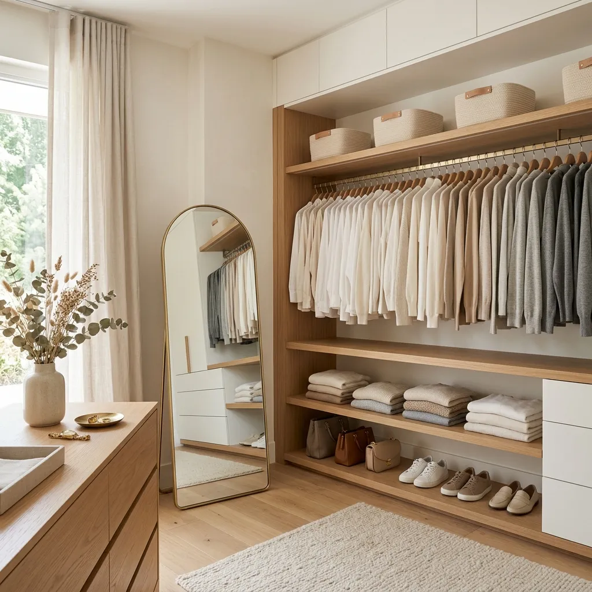
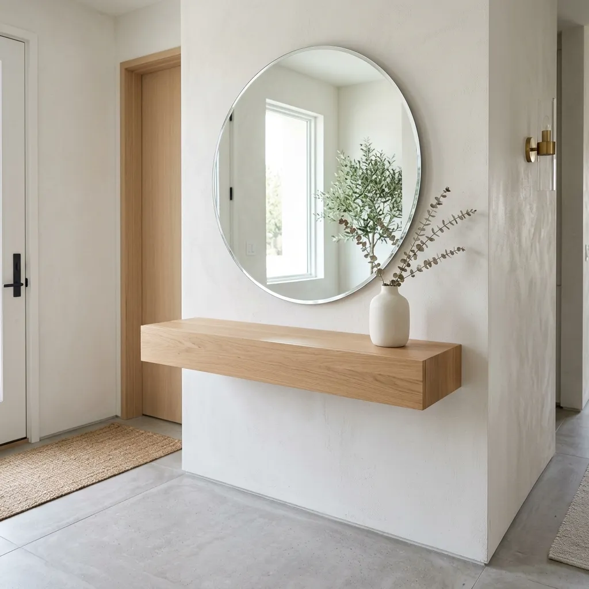
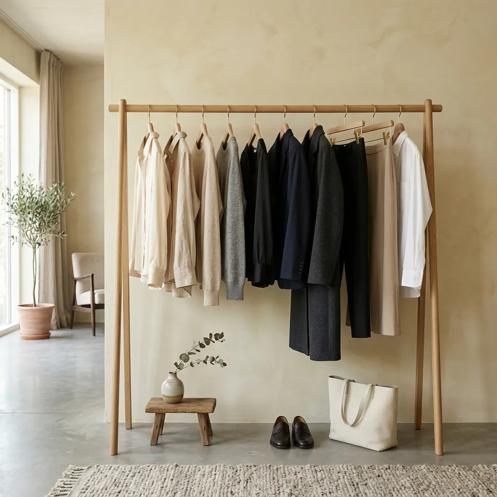

The 30-Day Minimalist Decluttering Challenge: A Step-by-Step Guide
We all know the feeling. You open a drawer to find a pen, and you are met with a tangled mess of old receipts, dead batteries, and rubber bands. You look at your closet and feel like you have nothing to wear, despite it being packed to the brim.
Physical clutter translates directly into mental clutter. When our environments are chaotic, our stress levels rise, our focus drops, and our homes stop feeling like a sanctuary.
The problem is, when we finally decide to "get organized," we try to do the entire house in a single weekend. We pull everything out, get completely overwhelmed by 2 PM, and end up shoving it all back into the closets. This method never works.
The secret to achieving a beautifully curated, minimalist home is incremental progress. That is why we created the ultimate 30-Day Minimalist Decluttering Challenge. By breaking the massive job of decluttering your home into 30 tiny, highly specific, 15-minute daily tasks, you will transform your space without the burnout. Let’s get started.

The Golden Rules of Decluttering
Before you begin Day 1, you must adopt the minimalist mindset. Keep these three rules in your head as you move through the 30-day challenge:
- The 90/90 Rule: Have you used this item in the last 90 days? If not, will you realistically use it in the next 90 days? If the answer is no, it is time to let it go.
- The "Just in Case" Trap: Stop keeping things "just in case" you might need them 5 years from now. You are sacrificing valuable, expensive living space for a hypothetical scenario.
- The Touch-It-Once Principle: When you pick up an item to declutter, do not put it back down in a "maybe" pile. Make a decision immediately: Keep, Donate, or Trash.
Week 1: Quick Wins & Visible Spaces
We are starting with highly visible areas. Seeing immediate, positive results will give you the psychological momentum you need to keep going.
Empty it completely. Throw away dried-up pens, random screws, and mystery keys. Only put back items that actually belong there.
Clear all flat surfaces in your living room. Remove old magazines, mail, and excess decor. Leave only 2-3 curated items.
Take off every magnet, expired coupon, and old wedding invitation. A clear fridge instantly makes the whole kitchen look cleaner.
Dump it out. Trash the receipts, organize your cards, and throw away the random gum wrappers.
Your bedroom should be a sanctuary. Clear off the water glasses, books you aren't reading, and cords. Leave only a lamp and perhaps one book.
Put away the shoes you aren't wearing this season, hang up the coats, and clear the console table of old mail.
Safely dispose of expired medications, old sunscreens, and crusty tubes of ointment. Wipe down the shelves.

Week 2: The Kitchen Deep Dive
The kitchen is the heart of the home, but it is also a magnet for useless gadgets and expired food.
Do you really need 4 spatulas and a specialized avocado slicer? Keep only your absolute favorite, highest-quality cooking utensils.
Match every lid to a container. If a lid has no bottom, or a bottom has no lid, recycle it immediately. Keep a streamlined set.
Throw away near-empty bottles of cleaner, consolidate supplies, and wipe away any spills.
Be ruthless. Check expiration dates on spices, canned goods, and baking supplies. Toss anything stale.
Keep your matching sets and your absolute favorite mug. Donate the promotional mugs you got for free at conferences.
If you haven't used the waffle maker or the slow cooker in a year, donate it. Clear off your kitchen countertops.
Pull out the baking sheets. If they are rusted beyond repair, toss them. Stack the remaining pans neatly.
Week 3: The Wardrobe & Personal Items
This is usually the hardest week emotionally. We attach a lot of guilt and memories to clothing. Remember, your closet should only contain items that fit you *today* and make you feel great.
Throw away anything with holes, stretched elastic, or that is uncomfortable to wear. You deserve nice basics.
Keep the ones you actually wear. Donate the free event t-shirts and the ones that no longer fit properly.
If you wouldn't buy it today, let it go. Donate dresses you wore to weddings 5 years ago.
Be honest about comfort. If a pair of shoes gives you blisters, you will never wear them. Donate them.
Pare down your accessories to the classics that you actually reach for to complete an outfit.
Makeup expires! Throw away old mascara, separated foundations, and the bright blue eyeshadow you wore once.
Keep 2 good quality towels per person in the house. Downgrade frayed or stained towels to cleaning rags.

Week 4: The Hidden Clutter & Digital Life
We are almost there! Now we tackle the areas that people don't see, but that weigh heavily on your mind.
Keep your absolute favorites and beautiful coffee table books. Donate the paperback novels you have already read.
Shred old bank statements. Set up paperless billing where possible. File important tax documents.
You do not need the charger for a phone you owned in 2012. Throw away mystery cords and broken headphones.
Unsubscribe from 10 store newsletters you never read. Delete the thousands of unread promotional emails.
Delete games you don't play and apps you haven't opened in months. Clean up your home screen.
Grab a trash bag. Clear out the water bottles, receipts, and old napkins from your car. Vacuum the seats.
Pick one small box. Keep only the most meaningful items. Take photos of kids' artwork instead of keeping every single paper.
The Final 48 Hours: Maintenance
Do not let the boxes sit in your trunk for a month. Drive to the donation center and physically drop everything off today.
You did it! To maintain this peace, commit to a new rule: For every new item you bring into your home (a shirt, a book, a mug), one old item must be donated or thrown away.
Congratulations. Take a walk through your home and feel the difference. The visual noise is gone. Your surfaces are clear. You now have the physical and mental space to truly relax and breathe in your own home.
Frequently Asked Questions
How do I start decluttering when I am completely overwhelmed?
The key to beating overwhelm is to start ridiculously small. Do not look at the whole room. Look at one single drawer, or even just the top of one table. Set a timer for 15 minutes and stop when the timer goes off. Small, consistent wins build the momentum you need.
What should I do with sentimental items I don't want to keep?
Guilt is not a good reason to keep something. If you have an inherited item that you hate looking at, take a beautiful photograph of it to preserve the memory, and then donate the physical item to someone who will actually love and use it.
Is minimalism just having empty white rooms?
Not at all! Minimalism isn't about sterility; it is about intentionality. It means everything in your home serves a purpose or brings you immense joy. You can have a colorful, cozy, art-filled home that is still minimalist, as long as there is no useless clutter.